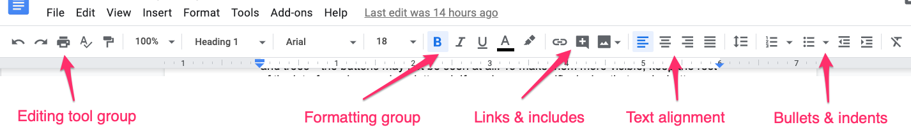
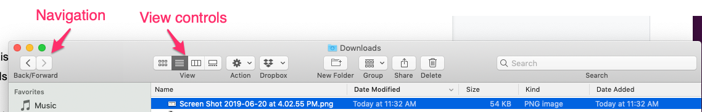
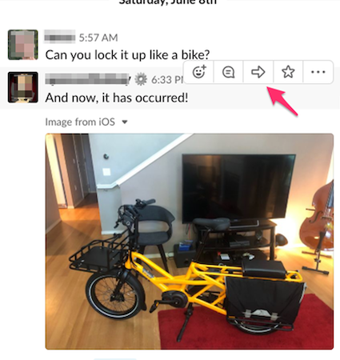
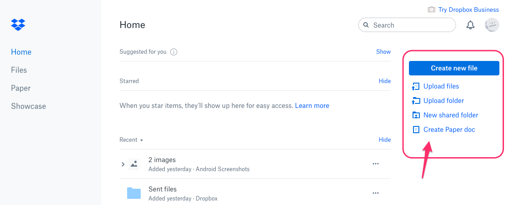
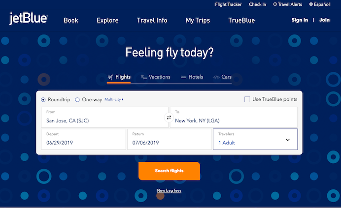
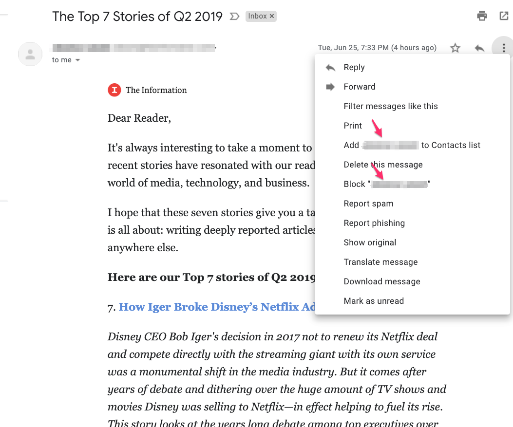
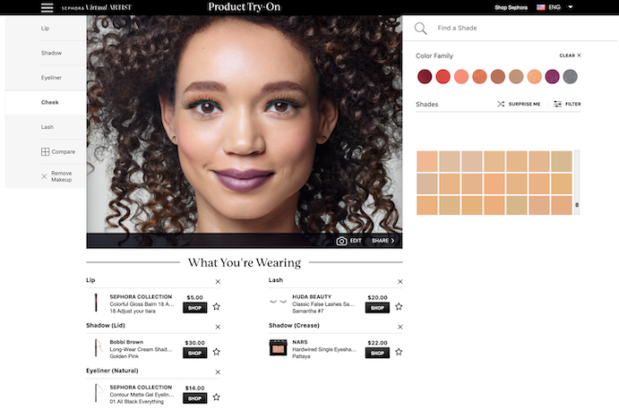
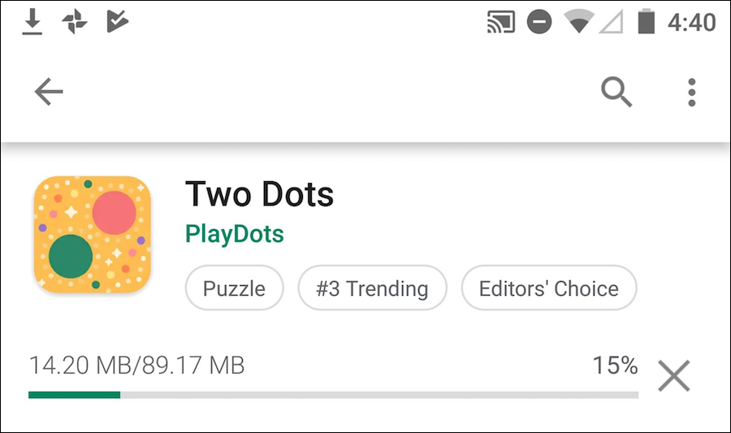
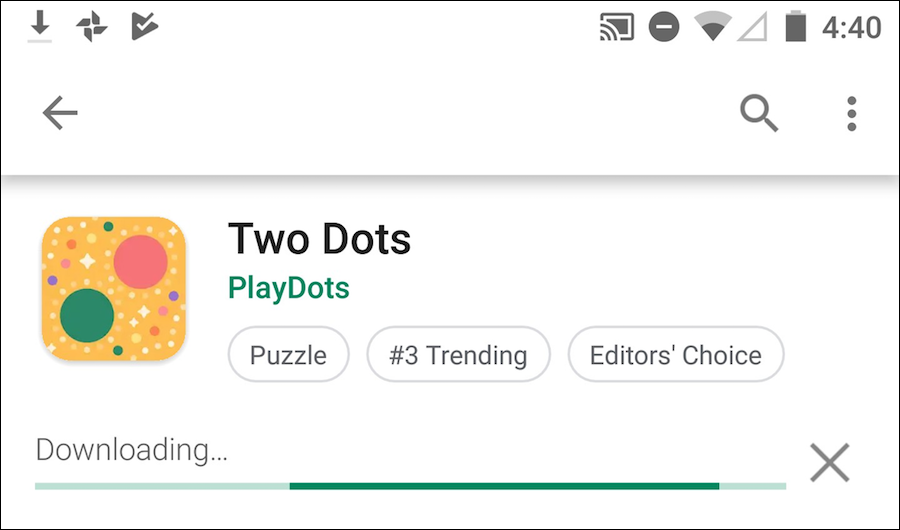

Las acciones y comandos son los verbos de la interfaz. Ventanas, textos, enlaces y listas son ejemplos de los sustantivos de la interfaz. Se pueden hacer muchas cosas para que la interfaz resulta menos aburrida y más fácil de usar. Los objetivos son hacer que las acciones correctas estén disponibles, etiquetarlas bien, que sean fáciles de encontrar, y soportar secuencias de las acciones.
Varias técnicas permiten presentar acciones de formas diferentes (no el típico menú de comandos). Estas técnicas se acoplan bien a interfaces con gran cantidad de elementos complejos y no saturan la interfaz.
En esta técnica se presentan acciones relacionadas como un pequeño grupo de botones, alineados y con tratamientos gráficos similares. Son posibles múltiples grupos si hay más de tres o cuatro acciones.
Agrupar los botones ayuda a que una interfaz sea auto-descriptiva. Los grupos de botones bien definidos son fáciles de elegir en un diseño complejo y, al ser tan visibles, comunican al instante la disponibilidad de esas acciones.
Es importante aplicar algunos principios visuales en su diseño. Primero la proximidad, pues si los botones están todos juntos, probablemente hacen cosas similares. Lo mismo sucede con la similitud visual, ya que botones de las mismas dimensiones, que parece que están relacionados. Por el contrario, grupos de botones que están separados en el espacio, o que son diferentes en la forma, implica grupos no relacionados de acciones.
Primero se debe determinar el grupo de los botones a mostrar. Se deben etiquetar con verbos cortos pero sin ambigüedades o frases verbales, y no hay que utilizar vocabulario especializado a menos que los usuarios lo esperen. No se deben mezclar los botones que afectan a cosas diferentes o tienen distinto alcance, estos se deben separar en diferentes grupos.
Todos los botones del grupo deben tener el mismo tratamiento gráfico: bordes, color, altura y / o anchura, icono de estilo, efectos dinámicos, y así sucesivamente. Se pueden alinear en una sola columna, o colocarlos en una sola fila, si no son demasiado grandes.
Si todos los botones de un grupo actúan sobre el mismo objeto u objetos, se debe poner el grupo de botones a la izquierda o a la derecha de los objetos. Se podría poner debajo de los objetos, pero los usuarios tienen a menudo un "punto ciego" en la parte inferior de los elementos de interfaces de usuario complejas, como las listas de varias columnas y árboles. Para hacerlos más visibles, se debe mantener el resto de la interfaz limpia y despejada. Si hay demasiados botones y si tienen iconos, también se podría poner en una barra de herramientas en la parte superior de la página.
Al utilizar los grupos de botones, se trata de evitar un amasijo de botones y enlaces, o quizá una larga y pesada lista de acciones sin ninguna diferenciación aparente. Con este patrón, se crea una jerarquía visual de acciones: el usuario puede ver de un vistazo qué está relacionado y qué es importante.
Las herramientas flotantes consisten en colocar los botones y otras acciones junto a los elementos sobre los que actúan, pero ocultarlos hasta que el usuario pase el puntero por encima. En una interfaz de usuario móvil, las herramientas deben aparecer junto a un objeto cuando el usuario lo pulse.
Las herramientas flotantes se muestran exactamente cuando y donde se necesitan. De lo contrario, no se ven, lo que permite que la interfaz de usuario permanezca limpia y despejada. Aparecen cuando el usuario las solicita y, al aparecer en respuesta al gesto del usuario, llaman la atención.
Los menús emergentes (con el botón derecho del ratón), los menús desplegables y las barras de menús también cumplen estos criterios, pero no son lo suficientemente fáciles de descubrir para algunos tipos de interfaces: se utilizan mejor en aplicaciones de escritorio tradicionales, no en interfaces basadas en la web. (Y a veces tampoco son la mejor opción en las aplicaciones tradicionales). Las herramientas flotantes son más fáciles de descubrir porque el gesto que las produce -un rollover- es muy sencillo y natural.
Desgraciadamente, en las pantallas táctiles se pierde la capacidad de tener un ratón y, por tanto, no existe el estado hover. En un panel táctil, la única forma en que un usuario puede ver las "herramientas flotantes" es si realmente toca el área de hover. En estas situaciones, si hay herramientas o acciones que puedan aplicarse al objeto, se deben mostrar en un panel o lista emergente que esté agrupada con el objeto seleccionado, o encima de él.
Se debe diseñar cada elemento o área de hover con espacio suficiente para mostrar todas las acciones disponibles. Se pueden ocultar las que saturen demasiado la interfaz y mostrarlas sólo cuando el usuario pase el puntero del ratón por encima del área en cuestión.
La respuesta al hover debe ser rápida, y no se debe utilizar una transición animada: simplemente se muestran las herramientas inmediatamente, y se esconden inmediatamente cuando el usuario aleje el puntero. Del mismo modo, nunca se debe ampliar el área de paso o reorganizar la página cuando el usuario pase el puntero por encima. La idea es hacer que la acción de pasar el ratón sea lo más ligera y rápida posible para que el usuario pueda alcanzar fácilmente las herramientas necesarias.
Si el área de paso es un elemento de una lista, es posible que se quiera resaltar el elemento cambiando su color de fondo o dibujando un borde a su alrededor. El hecho de mostrar las herramientas atraerá los ojos del usuario hacia esa zona, pero resaltar el elemento lo hará aún más.
Las herramientas flotantes se deben considerar como una alternativa a un menú desplegable, un menú emergente, un Panel de Acción, una Lista Incrustada con botones en ella, o un conjunto de botones repetidos en cada elemento.
También conocidos como paneles de tareas. Los paneles de acciones son esencialmente menús que el usuario no necesita activar, ellos siempre están visibles en la interfaz principal. Los paneles pueden promover las acciones más comunes o los comandos más relevantes, dependiendo de dónde se encuentre el usuario o qué esté haciendo en el software. Los paneles de acciones son una forma de presentar los comandos de una manera más llamativa.
Hay tres razones principales para utilizar el panel de acciones en lugar de los menús o los botones por elemento: visibilidad, espacio disponible y libertad de presentación.
Al colocar las acciones en la interfaz de usuario principal y no ocultarlas dentro de un menú tradicional, se logra que esas acciones sean totalmente visibles para el usuario. En realidad, los paneles de acción son menús en el sentido genérico; sólo que no se encuentran en las barras de menú, en los desplegables o en los pop ups. Los usuarios no tienen que hacer nada para ver lo que hay en un Panel de Acción -está justo ahí delante de ellos- por lo que su interfaz es más descubrible. Esto es particularmente bueno para los usuarios que no están familiarizados con el modelo de documento tradicional y sus barras de menú.
Hay muchísimas formas de estructurar los objetos de una interfaz: listas, cuadrículas o tablas, jerarquías y casi cualquier estructura personalizada que se pueda idear. Pero los grupos de botones y los menús tradicionales sólo ofrecen una lista (y no muy larga). Un Panel de Acción es de forma libre: da tanta libertad para organizar visualmente los verbos como los sustantivos".
Se debe asignar un bloque de espacio en la interfaz para el panel de acción. Se debe poner abajo o al lado del blanco de la acción, pues la proximidad es importante. El panel debe ser un rectángulo simple en la página.
Si se utilizan paneles móviles y el panel se puede cerrar, debe haber un mecanismo "muy obvio" para volverlo a abrir. Sobretodo si no existe otra forma de ejecutar las acciones presentes en el panel.
El contenido del panel de acción puede depender del estado de la aplicación, por eso el panel debe ser dinámico y cambiante. Los cambios atraen la atención del usuario, lo que es algo bueno.
Es importante mejorar la presentación o funcionalidad de ciertas acciones de forma que faciliten al usuario ejecutar la tarea correcta y no provoquen equivocaciones.
En esta técnica se pone el botón que finaliza una transacción al final del flujo visual; este debe ser grande y bien etiquetado. Ejemplos de este tipo de botón son: Hecho, Enviar, u OK.
El tener un último paso en la transacción da el sentido de terminación. El usuario entiende que la transacción se realizará cuando se oprima el botón. Este último paso debe ser muy obvio.
Crear un botón que en realidad luzca como un botón, no como un enlace, o bien utilizar los botones estándares de la plataforma o utilizar una botón gráfico grande o mediano con colores vivos y bordes bien definidos. Esto ayudará a que el botón se destaque en la página, y no se confunda con otras cosas.
Al etiquetar el botón, es prefiere utilizar etiquetas de texto en lugar de iconos. Son más fáciles de entender para las acciones de este tipo, sobre todo porque la mayoría de los usuarios buscan un botón con la etiqueta "Hecho", "Aceptar". El texto de la etiqueta puede ser un verbo o una frase verbal corta que describa lo que ocurrirá en términos del usuario, "Enviar", "Comprar", o "Cambiar Registro" (por ejemplo) es más específico que "Hacer", y algunas veces se pueden comunicar con mayor eficacia.
Se debe colocar el botón en dónde sea más probable que lo encuentre el usuario. Se debe seguir el flujo de trabajo a través de la página o formulario o cuadro de diálogo, y poner el botón más allá de la última etapa. Por lo general, eso será en la parte inferior y/o derecha de la página. El diseño de las páginas pueden tener un lugar estándar para ellos (p.ej. si se utiliza un marco visual) o la plataforma estándar pueden tenernlo, si es así, utilice el lugar estándar.
La técnica de opciones de menú inteligentes consiste en cambiar las etiquetas de los menú dinámicamente para mostrar precisamente lo que ellos hacen cuando son invocados.
Los elementos de menú que dicen exactamente lo que van a hacer hacen la interfaz de usuario auto-explicativa. El usuario no tiene que detenerse y averiguar qué objeto se verá afectado. Es también menos probable que haga accidentalmente algo que no tenía la intención. Por lo tanto, fomenta la exploración segura.
Cada vez que el usuario cambia el objeto seleccionado (o documento actual, última operación de deshacer, etc), se deben cambiar los elementos del menú que operan en él para incluir los detalles específicos de la acción. Obviamente, si no hay ningún objeto seleccionado del todo, se debe desactivar la opción del menú, lo que refuerza la conexión entre el elemento y su objeto.
Por cierto, este patrón también podría funcionar para las etiquetas de botones o vínculos, o cualquier otra cosa que es un "verbo", en el contexto de la interfaz de usuario.
Conforme el usuario realiza su trabajo varias técnicas le permiten retroalimentarse sobre las consecuencias de dichas acciones. Permitiendo que vea cuál será el resultado final de su trabajo, determine cuánto durará una acción, o bien, que pueda cancelar dicha acción.
Esta técnica muestra a los usuarios una vista previa o resumen de lo que va a pasar cuando se realiza una acción.
Una vista previa ayuda a evitar errores. Un usuario puede haber cometido un error, o que pudo haber malinterpretado algo que dio lugar a la acción de que se trate (por ejemplo, la compra de un artículo equivocado en línea). Por lo que mostrar un resumen o una descripción visual de lo que está a punto de suceder, le da una oportunidad de volver atrás y corregir cualquier error. La vista previa también pueden ayudar a las aplicaciones a ser más auto-descriptivas. Si alguien nunca ha utilizado una determinada acción antes, o no sabe lo que va a hacer en determinadas circunstancias, una vista previa es mejor que la documentación ya que el usuario aprende acerca de la acción exactamente cuando y donde lo necesita.
Justo antes de que el usuario realice una acción, se debe mostrar toda la información que le de una visión clara de lo que está a punto de suceder. Si se trata de una vista previa de impresión, se debe mostrar cómo se vería la página en el tamaño de papel elegido, y si es una operación sobre una imagen, se debe mostrar un primer plano de cómo se verá la imagen, y si se trata de una transacción, se debe mostrar un resumen de todo lo que el sistema sabe acerca de esa transacción. Mostrar lo que es importante, ni más ni menos.
Se debe dar al usuario una forma de ejecutar la acción directamente desde la página de vista previa. No hay necesidad de hacer que el usuario cierre la vista previa o navegue a otro lugar.
Del mismo modo, se debe ofrecer al usuario una forma de volver atrás. Si es capaz de salvar la transacción mediante la corrección de información introducida previamente, se le dará la oportunidad de hacer eso también, con los botones "Cambiar" al lado de la información que se puede cambiar. En algunos wizards y otros procesos lineales, esto podría ser una cuestión de navegar unos pasos hacia atrás.
El indicador de progreso muestra al usuario cuanto progreso fue alcanzado en una operación que consume mucho tiempo. Esta técnica se utiliza en acciones que consumen mucho tiempo (más de 2 segundos) o para acciones que se ejecutan en segundo plano (background).
Se puede mostrar un indicador animado de cuánto progreso a sido realizado. El usuario se siente impacienta cuando parece que la aplicación no hace nada. Aunque el puntero cambie por un reloj, el usuario no quiere esperar por un tiempo indeterminado.
Estudios muestran que si los usuarios ven un indicador de cuánto falta, ellos tienden a ser más pacientes. Este elemento le dice al usuario:
Qué está sucediendo.
Qué proporción de la operación ha sido completada
Cuánto tiempo falta
Cómo detenerlo
El indicador de progreso se debe actualizar constantemente conforme se realiza la tarea, indicadores de progreso que trabajan aislados es igual que nada. Se debe proveer un mecanismo para cancelar el trabajo.
La mayoría de las ambientes GUI proporcionan un widget o un cuadro de diálogo que implementa esta técnica. Hay que tener cuidado con los problemas de hilos de ejecución potencialmente complicados, sin embargo, el indicador de progreso se debe actualizar consistentemente mientras que la propia operación continúa deshabitada. Si es posible, se debe mantener el resto de la interfaz de usuario con vida, también. Es decir, no se debe bloquear la interfaz de usuario, mientras que el indicador de progreso sea visible.
La cancelabilidad consiste en proporcionar una forma de cancelar al instante una operación que consume tiempo, sin efectos secundarios.
Los usuarios cambian de opinión. Una vez que se inicia una operación que consume tiempo, un usuario puede querer detenerla, especialmente si un indicador de progreso le dice que va a tomar un tiempo. O el usuario puede haberla iniciado por accidente. La cancelabilidad ayuda a la prevención y recuperación de errores, el usuario puede cancelar algo que sabe que va a fracasar, como la carga de una página de un servidor web que se da cuenta que esta caído.
En cualquier caso, el usuario se sentirá mejor acerca de la exploración de la interfaz y probará cosas si sabe que todo es cancelable. Esta técnica alienta la exploración segura, que a su vez hace que la interfaz sea más fácil y divertida de aprender.
Se debe poner el botón "Cancelar" directamente en la interfaz, posiblemente junto a un indicador de progreso. O donde aparecerán los resultados de la operación. Se debe etiquetar con la palabra "Detener" o "Cancelar", y/o se debe poner un icono de parada (stop) reconocible: un octágono rojo, o un círculo rojo con una barra horizontal, o una "X".
Cuando el usuario haga clic o presione el botón "Cancelar", se debe cancelar la operación inmediatamente. Si se espera demasiado tiempo (más de uno o dos segundos), el usuario puede poner en duda que si la cancelación realmente trabaja. Luego se debe indicar al usuario que la cancelación fue llevada a cabo posiblemente mostrando un mensaje de estado.
Todo el material anterior es un resumen basado en el libro de:
Jenifer Tidwell, Charles Brewer, and Aynne Valencia. "Designing Interfaces: Patterns for Effective Interaction Design", O'Reilly, 2020 (Cap.8)